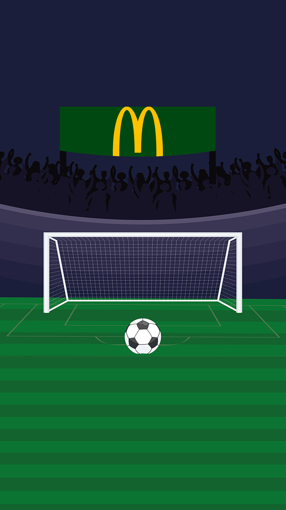

McDonald's Sprint 1
In het project over de McDonald’s kregen wij de opdracht van Livewall om een campagne te bedenken met als
doelstelling: het trekken van bezoekers naar McDonald’s restaurants en het vergroten van de loyaliteit.
Livewall is een creative digital agency en creëren applicaties, websites, campagnes en content voor
verschillende bekende merken.
Samen met het groepje waar ik tijdens dit project in zit hebben wij ons gefocust op het thema EK 2024.
McDonald’s is ook de sponsor geweest van het afgelopen WK. Het concept wat wij bedacht hebben is het
volgende:
In de app van McDonald’s hebben wij omtrent het EK twee spellen die je dagelijks een x aantal keer kan
spelen. Namelijk een Trivia game, Hier kun je quizvragen beantwoorden totdat je een rode kaart hebt
gekregen. (3 pogingen, Geel, Geel en Rood). Deze vragen gaan over het toernooi en over de McDonald’s
zelf. Naast de trivia game hebben we een penalty shootout, hier heb je de mogelijkheid om dagelijks 1
penalty shootout te doen dit wil zeggen schieten maar ook keepen.
Voor beide games krijg je een x aantal punten per goed antwoord of per gescoord en tegengehouden
doelpunt. Met deze punten kun je uiteindelijk pakketten open maken. In die pakketten zitten spelers. Bij
elk land zijn 5 spelers te verzamelen. Als je van een land alle 5 de spelers hebt gekregen uit pakketjes
(Denk aan de voetbalplaatjes verzamel acties) dan krijg je beloningen van coupons tot bijvoorbeeld
speciale EK/McDonald’s sokken.
Als het gaat om onderzoek heb ik tijdens sprint 1 van dit project een aantal dingen onderzocht. We begonnen met het onderzoeken van de doelgroep om zo onze doelgroep te bepalen. Hier keken we naar wat is de doelgroep van de McDonald’s en wat is de doelgroep van het EK 2024. Het resultaat heb ik uiteindelijk in het doelgroeponderzoek gezet. Verder heb ik nog onderzoek gedaan naar de campagnes van de fastfoodketen die goed hebben gewerkt en welke juist niet en waarom. Hiervan heb ik het document gewerkte McDonald’s campagnes opgesteld.
In ons project hebben we een penalty shooter. Hiervoor moest het design gemaakt worden. Hiervoor heb ik inspiratie opgedaan en uiteindelijk het design van de penalty’s gemaakt doormiddel van veel literaties ben ik uiteindelijk bij het uiteindelijke design gekomen. Los van het penalty design heb ik ook nog de achtergrond gemaakt en bewerkt in photoshop. Ook hierop heb ik verschillende keren feedback gekregen en dit aangepast om bij de uiteindelijke achtergrond te komen.
{kind=link}
Samen met Max ben ik bezig geweest met verschillende concepten te bedenken van het kaart design. Dit design is te zien bij de collectie en zijn de kaartjes die verzameld moeten worden. Hier hebben we samen veel gekeken en geprobeerd hiervan zijn ook iteraties te vinden en het uiteindelijke design.